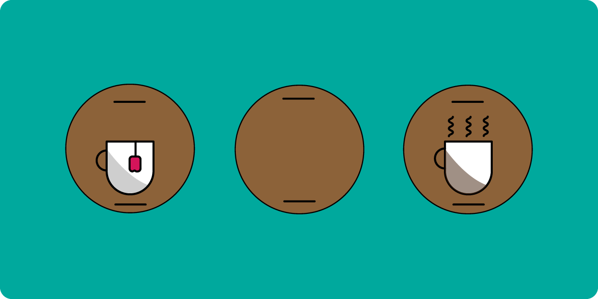

Min inspiration, baserer meget af det som jeg arbejder med i henhold til Musik, og andre forskellige kunstnere. Det som jeg har mest interesse i. Men også i 80'ers Retrowave ligger mine interesser i visuelt.

til Cover Arts har jeg en stor interesse i at lave forskellige baseret på kunstnere i de forskellige musikgenre. Det her design er taget i inspiration af en af mine yndlingsartister, hvor jeg har brugt mig selv i Photoshop til at lave rundt om det.

I det her "Inside Your Mind" leger jeg også rundt med forskellige designs til ideer for musikalske album og single-arts som ideer, hvor Neon textures og farvegradienter i Photoshop er noget jeg ofte bruger meget.
I det her projekt, blev jeg inspireret til at arbejde ud for at lave en applikation til en tøj-genbrugsbutik i Adobe XD tilbage i 2019. Det var et projekt som jeg har lavet i samarbejde med inspiration fra en genbrugsbutik ved navn Wasteland.
Klik her for at se på prototypen.Jeg har også arbejdet i Adobe Illustrator, hvor jeg har prøvet mig lidt frem med forskellige ikoner, og her er et eksempel på et logo i henhold til en kop te.
